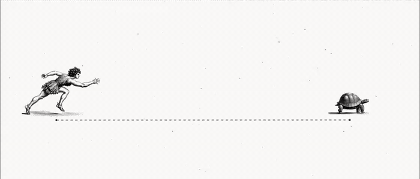

Zeno’s Paradox in AI
September 16, 2026
True story: our original company name when we were in stealth was Zeno AI, not Patronus AI.
Back in 2023, Rebecca and I started the company on the idea that AI evaluation was like Zeno’s Paradox. Every time models reached the bar we had set, the frontier of what we needed to evaluate moved further ahead.
Fast forward to 2026, I still think Zeno's Paradox is the most accurate way to describe AI progress. Every finish line we draw for AI moves the moment it reaches it.
In the original Zeno's Paradox, every time Achilles reaches where the tortoise stood, the tortoise has moved a little further on, so he appears to chase forever. Mathematically the paradox does resolve. The shrinking gaps sum to a finite length, and Achilles does pass.
In the AI version of the paradox, the idea is that humans are the tortoise, and AI is Achilles. We start far ahead, carrying millions of years of evolutionary and cultural learning. And over the last few years, Achilles has closed most of the visible distance.
But the reason the AI version is more interesting is that the tortoise keeps speeding up. Each time AI closes a gap, it hands the people defining the frontier a better tool for defining the next one. Mathematicians use the newest models to probe harder open problems. Researchers use them to help design the very evals the next generation of models will struggle against.
Everyone is anxious about the rate of progress in AI right now, but ultimately I think we’re going to land in a pretty optimistic place: AI will enable humans to reach farther than ever.
@danshipper has a nice GIF of this tortoise/Achilles setup, see below.

Originally posted on X.